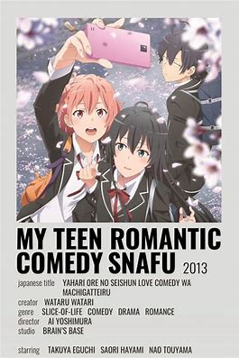
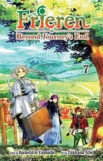
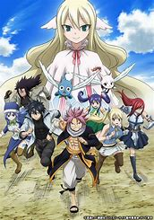

One Piece

One Piece is a popular Japanese manga and anime series created by Eiichiro Oda. It follows the adventures of Monkey D. Luffy, a young pirate with the ability to stretch his body like rubber after eating a magical "Devil Fruit." Luffy dreams of becoming the Pirate King by finding the legendary treasure known as the "One Piece," left behind by the greatest pirate of all time, Gol D. Roger. Along his journey, Luffy gathers a diverse crew, known as the Straw Hat Pirates, each with unique skills and dreams. Together, they face powerful enemies, discover mysterious islands, and uncover secrets of the world in their quest for freedom and adventure. Known for its world-building, engaging characters, and themes of friendship and resilience, *One Piece* has become one of the best-selling manga series in history.
SNAFU / My Teen Romantic Comedy
The anime My Teen Romantic Comedy SNAFU (also known as OreGairu or Yahari Ore no Seishun Love Comedy wa Machigatteiru) follows the story of Hachiman Hikigaya, a cynical high school student with a negative view on society and relationships. As a "punishment" for his attitude, his teacher forces him to join the school's Service Club, a group dedicated to helping students with their problems.
In the club, Hachiman works alongside the sharp and stoic Yukino Yukinoshita and the cheerful Yui Yuigahama. Through their interactions and challenges in helping others, Hachiman’s philosophy on life is constantly tested. The series delves into themes of friendship, personal growth, and the complexity of human relationships, offering a mix of humor, introspection, and social commentary that makes it a unique take on the high school anime genre.
Freiren Beyond Journey's End
Frieren: Beyond Journey’s End is a fantasy anime that explores the life of Frieren, an elf mage who served as a member of a heroic party that defeated the Demon King. Unlike her human companions, Frieren's long lifespan gives her a unique perspective on time, and she struggles to understand the fleeting nature of human lives and relationships. After her human comrades pass away, Frieren begins a journey to understand the bonds she once overlooked and to honor the memories of her friends. The series is a reflective, emotional tale about grief, growth, and the value of human connection, set against a beautifully crafted fantasy world. It offers a thoughtful twist on typical adventure stories, focusing on the aftermath of heroism rather than the quest itself.
Summertime Rendering

Summertime Rendering is a thrilling mystery anime centered on Shinpei Ajiro, who returns to his remote island hometown to attend the funeral of his childhood friend, Ushio. However, strange occurrences and suspicious deaths soon suggest that something supernatural is happening. As Shinpei investigates, he becomes trapped in a time-loop, forced to confront eerie shadows that seem to replace and mimic the island’s residents. With each loop, he uncovers more about the dark secrets threatening his town and the people he loves. The series blends suspense, horror, and supernatural elements, making it an intense and mind-bending experience.
FairyTail
Fairy Tail is a fantasy adventure anime that follows Lucy Heartfilia, a young celestial wizard, who joins the Fairy Tail Guild, a renowned and rambunctious group of mages known for their loyalty and strength. She quickly forms a close bond with fellow guild members, including Natsu Dragneel, a fire dragon slayer searching for his adoptive dragon father; Happy, a flying blue cat; Erza Scarlet, a powerful knight; and Gray Fullbuster, an ice wizard. Together, they take on dangerous missions, face powerful foes, and uncover dark secrets about their world. Known for its themes of friendship, courage, and perseverance, *Fairy Tail* delivers a mix of humor, action, and heartfelt moments in a magical setting.